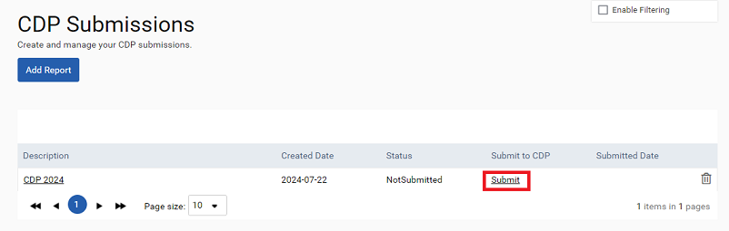
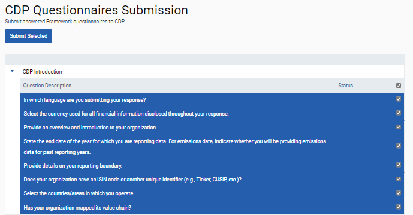

GSE-809: You can now submit data, using a Frameworks questionnaire, directly to CDP.
Note:This was previously released to customers who report annually to CDP.
If you would like to make use of the CDP API, or would like the CDP questionnaire added to your instance of Sustainability Performance Management, contact the Cority Support Team for assistance. You must be a Frameworks user to access this functionality.
Once you have completed the questionnaire, responses can be sent to CDP through the API. To do that, navigate to Reporting > CDP Submissions. Select the 'Add Report' button and specify the period group, reporting period, questionnaire, and node where you completed your CDP response. Finally, enter a name for your submission and enter your subscription key. Your subscription key is provided by CDP. If you have not yet received one, contact CDP for assistance. After completing the steps above, click the 'Submit' button (red outline) to progress to the next stage of submission.

Responses can be sent one question or one section at a time. Select questions using the relevant check boxes at the right of the screen and then use the 'Submit Selected' button at the top. This must be completed for every question you want to send to CDP.

If a question does not submit as part of a section, a failure message will display next to the question. If you are unable to resolve that, contact the Cority Support Team for assistance. To complete your CDP submission, you must log into the CDP ORS and use the 'Submit' button.
To ensure responses have been sent as expected from Sustainability Performance Management to CDP, responses should be verified in full in the CDP ORS. Users are responsible for verifying responses before they are submitted. If you require help with that, contact the Cority Support Team.
Note: Currently, if you submit to CDP using a table-style question with a number of rows, then you delete one or more of the rows and submit again (for example, if you have made a mistake), CDP will not recognize that you have deleted rows. CDP will update the rows you have not deleted, if necessary, but will not remove the rows you deleted. If you want to delete rows after an initial submission, you must also delete them on the CDP side (within the CDP system).